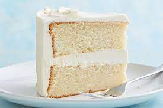

Chocolate Cake

No word of a lie, this is THE BEST MOIST CHOCOLATE CAKE recipe on the internet. If you’ve been looking for it, then look no further…
Ingredients
- 1 ¾ cup 250g all-purpose flour
- 2/3 cup 56g cocoa powder
- 1 tsp baking powder
- 1 tsp baking soda
- 1 cup 200g granulated sugar
- ½ cup 110g packed light brown sugar
- ¾ tsp salt
- 2 large eggs
- ½ cup 120ml neutral oil
- ¾ cup 180ml sour cream
- 1 tsp 5ml pure vanilla extract
- 1 cup 240ml hot coffee
Instructions:
- Preheat oven to 350°F. Lightly grease and flour two 8-inch round cake pans and line the base with parchment paper.
- Sift flour, cocoa, baking powder and baking soda into a large bowl. Add both sugars and salt and whisk to blend well, pressing out any lumps of brown sugar.
- Combine eggs, oil, sour cream and vanilla in a medium bowl and whisk to blend well. Pour into the bowl with the dry ingredients and mix with an electric hand mixer on medium-low until blended. It will be thick and somewhat dry. Add the hot coffee gradually in two stages to minimize clumps forming and beat until evenly combined and the batter smooth.
- Divide batter evenly between the prepared pans and bake for 30-33 minutes until cakes spring back when pressed gently and a skewer inserted into the center comes out clean. Transfer pans to a wire rack and let cool for 15 minutes before inverting onto the rack to cool completely.
- Once cakes are cooled, cover them with the BEST Chocolate Fudge Frosting!
Print Recipe
Vanilla Cake

No word of a lie, this is THE BEST MOIST VANILLA CAKE recipe on the internet. If you’ve been looking for it, then look no further…
Ingredients
- 3 cups (420 g) all purpose flour
- 3½ tsp baking powder
- Pinch salt
- 1 cup (226 g) unsalted butter, softened
- 2 cups (400 g) white granulated sugar
- 4 large eggs at room temperature
- 2 tsp vanilla extract
- 1¼ cup (300 ml) whole milk
Instructions:
- Sift flour, baking powder and pinch of salt in a large bowl and set aside.
- In a large mixing bowl, cream butter and white sugar at high speed for a few minutes until it's fluffy and reaches a pale yellow color.
- While still mixing at a lower speed, add the eggs one at a time and mix until each one is well incorporated. Then, add the vanilla extract. At this point you can scrape the inside of the bowl to make sure everything has been mixed well.
- Add the flour mixture in 3 batches alternating with the amount of milk, which will be added in 2 batches. Begin and end with the flour mixture. Mix only until each ingredient is incorporated without over mixing, otherwise, you will end up with a tough cake.
- Grease two 9 x 2 inch (23 x 5 cm) round cake pans and evenly pour your batter into the pans. Bake at 350ºF (180ºC) for about 30-35 minutes or until a toothpick inserted in the center comes out clean. Take the cakes out of the oven and let them rest inside the pans for about 10 minutes. Then, take them out of the pans and let them cool completely on a wire rack.
- Once cooled, you can take off the top part of each cake with a cake leveler or a serrated knife to make them even. Frost the top part of one of the cakes with the vanilla buttercream (this is the bottom layer of your cake) and then flip over the second cake and place it on top of the first one. Now, cover both cakes with a thin layer of buttercream and refrigerate for about 15-20 minutes. This will be your crumb coat or base coat which will seal all the crumbs of the cake.
- Take the cake out of the refrigerator and finish decorating it with a second layer of buttercream.
Print Recipe